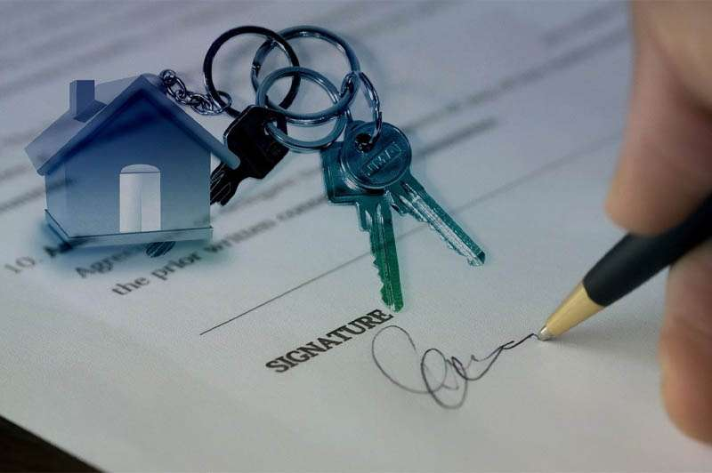
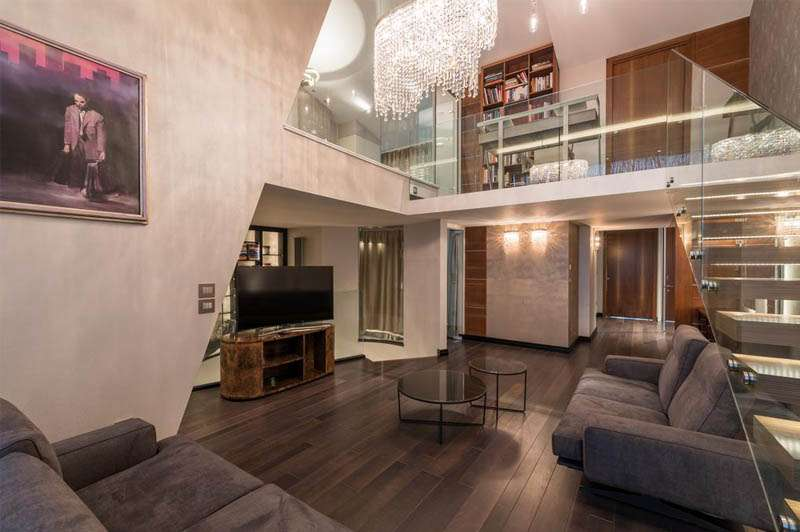
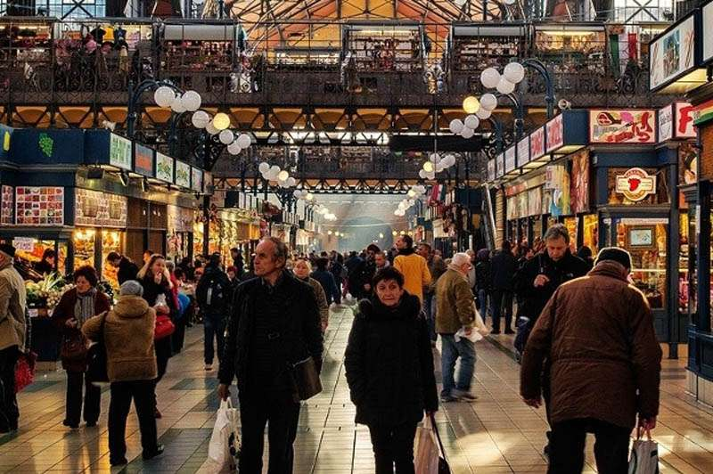
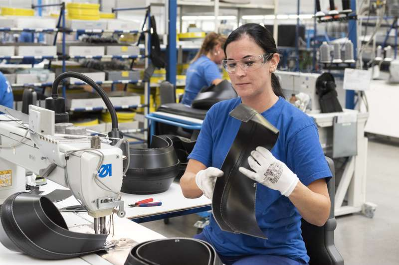

05/05/2022 1674
Nép mình ở trung tâm của Trung Âu, Hungary là một quốc gia đang ngày càng được nhiều người trên khắp thế giới biết đến trong vài năm qua. Hungary đang ngày càng khẳng định mình là một điểm đến tuyệt vời cho người nước ngoài muốn tận hưởng một cuộc sống thư thái ở một đất nước xinh đẹp.
Kể từ khi gia nhập Liên minh Châu Âu năm 2004, quốc gia này đã có những cải thiện đáng kể về nền kinh tế và mức đầu tư nước ngoài. Kết hợp với chi phí sinh hoạt hợp lý và thị trường việc làm phát triển mạnh, thật dễ hiểu tại sao rất nhiều người đã chọn bắt đầu một cuộc phiêu lưu mới tại đất nước Châu Âu xinh đẹp này.
Với một thành phố thủ đô nhộn nhịp hấp dẫn du khách cũng như người nước ngoài sinh sống và làm việc. Hệ sinh thái với hàng loạt hồ, sông, đồng bằng và dãy núi thơ mộng đáp ứng nguyện vọng của những ai muốn tận hưởng kỳ quan của mẹ thiên nhiên, bạn còn chần chừ gì nữa? Hãy cùng Lotus Quảng Bình tìm hiểu tại sao nên làm việc tại Hungary qua bài viết này nào.
Budapest, thủ đô của Hungary
Thông tin cơ bản về Hungary
Thời tiết : Hungary có khí hậu tương tự như hầu hết các quốc gia lục địa ở châu Âu, bao gồm mùa hè nóng và khô, kết hợp với mùa đông lạnh và tuyết. Với nhiệt độ trung bình là 10 ° C, bạn có thể mong đợi mức cao nhất là 26 ° C và mức thấp nhất là - 3°C.
Dân số : Dân số của Hungary vào khoảng 9,75 triệu người, với độ tuổi trung bình là khoảng 43 tuổi.
Lịch sử : Hungary là một quốc gia được cho là đã có người sinh sống từ cuối thế kỷ thứ 9 khi bị người Magyars chiếm đóng. Giống như nhiều quốc gia khác ở châu Âu, Hungary đã có một quá khứ đầy biến động, từng là khu vực nằm dưới sự cai trị của nhiều đế chế khác nhau, nổi tiếng nhất là Chế độ quân chủ Habsburg. Trong lịch sử gần đây, Hungary nằm dưới sự chiếm đóng của Đức trong chiến tranh, sau đó nằm dưới sự chiếm đóng của Liên Xô cho đến khi Thế chiến II kết thúc. Vào tháng 10 năm 1989, nước Cộng hòa thứ ba của Hungary được thành lập, và quốc gia này cuối cùng đã gia nhập Liên minh châu Âu vào năm 2004 .
Có thể bạn chưa biết ?
- Mặc dù nhiều người trong chúng ta sẽ vỗ tay vào cốc bia của mình để 'Chúc mừng', nhưng điều này được coi là thô lỗ ở Hungary
- Hungary là một trong những quốc gia lâu đời nhất ở Châu Âu - thậm chí còn lâu đời hơn cả Pháp và Đức!
- Thủ đô Budapest của Hungary được biết đến là nơi có nhiều suối nước nóng nhất trên thế giới
- Chính phủ có một danh sách các tên được chấp thuận trước cho con bạn, nếu tên không có trong danh sách, bạn phải nộp đơn để được chấp thuận.
- Hungary thu thuế VAT cao nhất thế giới
- Khối Rubik được phát minh ở Hungary
- Mặc dù đất nước này có thể không được biết đến với các loại rượu, nhưng đây là quê hương của vùng sản xuất rượu vang chính thức đầu tiên trên thế giới
- Món ăn quốc gia là thịt bò hầm Goulash hoặc 'gulyás'
- Ngày quốc khánh của Hungary là ngày 20 tháng 8, kỷ niệm ngày đất nước được thành lập
- Hầu hết người Hungary sẽ sử dụng tên thứ hai của họ khi viết hoặc giới thiệu bản thân
Các bạn có thể tìm hiểu nhiều điều lý thú hơn về Hungary qua bài viết Tìm hiểu về đất nước Hungary
Một quốc gia Châu Âu đáng sống
Bất kỳ người nước ngoài nào chuyển đến Hungary sẽ thấy mình rất may mắn vì họ sẽ có rất nhiều thành phố tuyệt vời mà họ có thể chọn để gọi là quê hương. Mặc dù nhiều người nước ngoài chọn sống ở thủ đô Budapest nhộn nhịp, nhưng vẫn có nhiều lựa chọn khác mang đến sự kết hợp giữa trải nghiệm văn hóa, lịch sử và giải trí mà bất kỳ ai cũng thích thú.
Cho dù bạn đang tìm kiếm một nơi hoàn hảo để học tập, tìm một công ty để bắt đầu sự nghiệp của mình hay một cơ sở để đi du lịch vòng quanh Châu Âu, bạn không thể chọn một địa điểm nào tốt hơn Hungary.
Nếu bạn vẫn chưa quyết định nơi ở của đất nước bạn muốn chuyển đến, thì đây là một số thành phố châu Âu đáng sống cho người nước ngoài.
Chi phí thuê nhà tại Hungary rất thấp
Tỷ lệ sở hữu nhà nói chung ở Hungary khá cao, với khoảng 91% dân số sở hữu nhà của họ. Tuy nhiên, ở các thành phố lớn việc thuê căn hộ và di chuyển khắp nơi vẫn rất phổ biến cho đến khi bạn tìm được nơi an cư lạc nghiệp.

Với người nước ngoài thì nên bắt đầu với việc thuê nhà, bằng cách này bạn có thể thử sống ở các thành phố khác nhau trước khi có ý định sống lâu dài ở đây.Ở Hungary, giá thuê nhà rất thấp khi so sánh với một số thành phố lớn khác ở châu Âu, điều này cân bằng với mức lương thấp hơn mức trung bình mà bạn có thể mong đợi. Trung bình, bạn đang xem xét việc trả khoảng € 275 một tháng cho một căn hộ một phòng ngủ, nhưng bạn có thể trả nhiều hơn hoặc ít hơn tùy thuộc vào nơi bạn chọn sống. Với những lao động nước ngoài, nhiều công ty sẽ hỗ trợ chỗ ăn ở để tiện cho bạn đi làm làm việc.
Thành phố đắt đỏ nhất nhất ở Hungary là thủ đô Budapest, vì vậy nếu bạn chọn định cư ở đây, bạn sẽ phải trả tiền thuê nhà nhiều hơn chỗ khác với khoảng € 445 một tháng cho một căn hộ một phòng ngủ ở trung tâm thành phố.
Phần lớn các chủ nhà ở Hungary sẽ chỉ cho phép bạn ký hợp đồng thuê tối thiểu một năm. Tuy nhiên, bạn có thể đồng ý với hợp đồng sáu tháng nếu may mắn. Ở các thành phố, thị trường nhà ở biến động khá nhanh nên bạn thường phải đưa ra quyết định chọn một căn hộ khá nhanh nếu muốn có được căn hộ ưng ý. Hầu hết mọi người thích mua nhà ở Hungary.

Người nước ngoài cũng có thể tìm căn hộ trực tuyến nhưng nên cẩn thận với những trò gian lận nhắm vào khách quốc tế.
Giống như hầu hết các quốc gia khác, khi ký hợp đồng thuê nhà ở Hungary, bạn sẽ phải trả một khoản phí đặt cọc (tương đương với một tháng tiền thuê nhà) để đảm bảo căn hộ của mình mà bạn sẽ nhận lại khi kết thúc thời gian thuê. Một số chủ nhà cũng sẽ yêu cầu bạn trả trước tháng tiền thuê nhà đầu tiên .
Tiền thuê hàng tháng của bạn thường sẽ không bao gồm chi phí tiện ích, trừ khi nó được quy định trong hợp đồng của bạn, vì vậy hãy đảm bảo ngân sách khoảng € 115 một tháng cho những thứ như nước, điện, hệ thống sưởi và internet.
Nhiều cảnh đẹp, lễ hội và nền văn hóa thú vị độc đáo
Nếu bạn muốn thư giãn và thực hiện các cuộc phiêu lưu vào thời gian rảnh rỗi của mình, chúng tôi không thể nghĩ ra một nơi nào tốt hơn để đến ngoài Hungary. Mặc dù là một trong những quốc gia nhỏ hơn ở Châu Âu, nhưng có rất nhiều điều khiến bạn phải nghĩ đến
Những người yêu thích hoạt động ngoài trời sẽ hài lòng khi biết rằng đất nước này là nơi có 8 Di sản Thế giới tuyệt đẹp được UNESCO công nhận, rất đáng để du khách đến thăm. Cùng với các tuyến đường lái xe tuyệt đẹp, những con đường đi bộ bình dị và các spa nước nóng mang tính biểu tượng của Hungary nằm rải rác trên khắp đất nước, nó khiến bất kỳ ai cũng thích thú.
Hồ Balaton
Người nước ngoài sẽ có thể tiếp nhận nền văn hóa Hungary độc đáo ở bất cứ đâu trên đất nước này, từ những địa danh lịch sử phong phú đến các nhà hàng địa phương phục vụ các món ăn ngon của quốc gia, bạn có thể lựa chọn khi lên kế hoạch cùng bạn bè.
Cuộc sống ở các thành phố chính cũng thú vị như ở nông thôn, với rất nhiều lễ hội và sự kiện diễn ra quanh năm mà chúng tôi khuyên mọi người nên tham dự.
Dưới đây là một số lễ hội Hungary phổ biến nhất mà bạn thực sự không nên bỏ lỡ :
- Lễ hội khinh khí cầu
- Lễ hội Sziget
- Busójárás
- Lễ hội văn hóa dân gian quốc tế Summerfest
- Lễ hội nghệ thuật dân gian Budapest
- Lễ hội Phục sinh Hollókő
- Tuần rượu vang Badacsony
- Lễ hội Ozora
- Lễ hội hoa oải hương Tihany
Nền ẩm thực hấp dẫn với nhiều món ăn ngon
Những người đam mê ẩm thực sẽ có một khoảng thời gian tuyệt vời ở Hungary, vì đất nước này được biết đến với nền ẩm thực phong phú. Các món ăn dân tộc như Goulash là món chính trong thực đơn của bất kỳ nhà hàng nào, nhưng ngoài ra còn có rất nhiều món ăn khác cũng nổi tiếng và ngon không kém.
Phần lớn thực phẩm của Hungary dựa trên thịt, rau, bánh mì và các sản phẩm từ sữa. Dưới đây là một số món được nhiều người yêu thích :
-
Súp Halászlé - Món súp cá gia vị với rau và mì ống tạo nên món ăn hoàn hảo cho mùa đông
-
Lángos - một loại bánh mì dẹt chiên giòn có thể phủ thêm lớp trên bề mặt giống như một chiếc bánh pizza
-
Főzelék - món hầm rau củ thật dày để làm ấm cơ thể, ăn kèm với bánh mì ăn kèm ngon nhất
-
Somlói Galuska - đối với những người thích món ngọt, còn món bánh yêu thích của quốc gia thì sao? Nó được làm từ bánh bông lan phủ kem sô cô la, nhân quả óc chó, rượu rum và kem tươi
Chi phí sinh hoạt tại Hungary khá thấp
Nếu bạn chuyển đến Hungary, bạn sẽ nhận thấy sự khác biệt lớn về chi phí sinh hoạt. Chi phí sinh hoạt ở Hungary tương đối thấp so với các nước châu Âu khác, kể cả chi phí thuê nhà, đi chơi và các chi phí hàng ngày khác.
Các thành phố chính như Budapest và Debrecen là những nơi đắt đỏ nhất để sinh sống, nhưng bất kể bạn chọn định cư ở đâu, bạn sẽ không bao giờ phải lo lắng về việc phải chi tiêu quá nhiều để sinh sống.
Ở Hungary, ăn ở ngoài vô cùng rẻ . Đối với một bữa ăn tại một nhà hàng rẻ tiền, bạn có thể phải trả 10.000 Ft tương đương với € 5,50. Đi uống nước với bạn bè cũng rất hợp với túi tiền, với các loại bia có giá khoảng 550 Ft (khoảng € 1,50). Nếu cà phê là sở thích của bạn, bạn có thể dành bao nhiêu thời gian tại các cửa hàng cà phê và quán cà phê tùy thích, vì một tách cà phê sẽ chỉ tốn của bạn 460 Ft, tức là khoảng € 1,20.
Các cửa hàng tạp hóa mở hàng tuần ở Hungary, thật dễ dàng để mua sắm với ngân sách tiết kiệm .
Dưới đây là ví dụ về một số mặt hàng phổ biến trong cửa hàng tạp hóa và bạn sẽ phải trả giá trung bình bao nhiêu trong một siêu thị Hungary.
|
Danh mục |
Hungary |
Euro |
|
Sữa ( 1 lít ) |
247 Ft |
€ 0,67 |
|
Ổ bánh mì |
245 Ft |
€ 0,66 |
|
Gà phi lê ( 1kg) |
1.500 Ft |
€ 4,07 |
|
Táo ( 1kg ) |
470 Ft |
€ 1,28 |
|
Chai rượu |
1.400 Ft |
€ 3,80 |
Chi phí sinh hoạt trung bình cho một người ở Hungary là khoảng € 465 một tháng , không bao gồm chi phí thuê nhà. Con số này thấp hơn 46% so với chi phí bạn mong đợi phải trả để sống ở một thành phố của Thụy Điển như Stockholm.
Giao thông và phương tiện công cộng thuận tiện
Giống như hầu hết các nước châu Âu, mạng lưới giao thông ở Hungary khá tiên tiến - đặc biệt là ở các thành phố lớn. Thật dễ dàng để đi xung quanh các thành phố bằng cách sử dụng một loạt các phương tiện giao thông công cộng như xe buýt, tàu điện ngầm và xe điện.
Ở Hungary, giao thông công cộng thường chạy trong khoảng thời gian từ 5h30 sáng đến 9h tối ở hầu hết các khu vực, nhưng từ 4h30 sáng đến nửa đêm ở Budapest. Bạn càng đi xa ra khỏi các thành phố chính, các liên kết giao thông càng kém phát triển, nhưng bạn không bao giờ cảm thấy khó khăn khi đi lại – cho dù bạn ở đâu trong nước.
Vé vận chuyển cho các dịch vụ địa phương có thể được mua tại các quầy báo và cửa hàng bán vé. Những chiếc vé này thường có giá khoảng 300 Ft (0,80 €), nếu bạn không xuất trình được vé khi thanh tra yêu cầu, bạn sẽ bị phạt ngay tại chỗ .
Nếu bạn đang sống ở Budapest, lựa chọn đi lại của bạn sẽ phong phú hơn một chút vì đây là thành phố Hungary duy nhất có dịch vụ tàu điện ngầm 4 tuyến để giúp bạn đi lại nhanh chóng và hiệu quả. Giống như Szeged và Debrecen, Budapest cũng có hệ thống tàu điện với năm tuyến.
Sau khi khám phá Hungary, bạn có thể muốn khám phá thêm một số quốc gia lân cận ở Châu Âu, điều này thật dễ dàng thực hiện nhờ 6 sân bay trên cả nước có liên kết tuyệt vời với Châu Âu và hơn thế nữa.
Nếu phương tiện giao thông công cộng không phải là sở thích của bạn, bạn cũng có thể tìm kiếm một chiếc ô tô cho thời gian của mình ở Hungary. Ô tô ở Hungary có giá cả phải chăng và bạn có thể sử dụng bằng lái xe nội địa của chính mình để chuyển từ A đến B. Tuy nhiên, giấy phép lái xe trong nước của bạn sẽ chỉ có hiệu lực trong một năm, sau đó bạn sẽ phải lấy cho mình bằng lái xe
Người nước ngoài sinh sống nhiều
Hơn 180.000 người nước ngoài hiện gọi Hungary là quê hương , vì vậy bạn chắc chắn sẽ tìm thấy rất nhiều người quốc tế giống như mình. Hầu hết các thành phố lớn hơn như Budapest, có một cộng đồng người nước ngoài phát triển mạnh. Vì vậy bạn sẽ nhanh chóng bắt đầu cảm thấy đây như là nhà của mình.
Nếu bạn muốn gặp gỡ và làm quen với những người cùng quê hương, bạn chỉ cần tìm kiếm các nhóm người nước ngoài ở Hungary (hoặc thành phố bạn đang ở) trên Facebook và có rất nhiều tùy chọn sẽ xuất hiện. Thật dễ dàng phải không nào?

Mặc dù tất cả chúng ta đều muốn gặp gỡ những người từ quê nhà để giúp chúng ta cảm thấy ổn định hơn, nhưng chúng tôi cũng khuyên bạn nên làm quen và trở thành bạn bè với một số người dân địa phương . Ở các thành phố, phần lớn người dân sẽ nói tiếng Anh, vì vậy không có lý do gì để không nói chuyện với họ.
Nhiều chương trình hỗ trợ học tiếng Hungary
Nếu bạn sắp sống ở Hungary, bạn nên bắt đầu học ngôn ngữ này để làm cho cuộc sống hàng ngày của bạn dễ dàng hơn một chút. Tiếng Hungary là ngôn ngữ chính thức của Hungary và cũng được công nhận là ngôn ngữ thiểu số ở Romania, Serbia, Croatia, Slovakia, Slovenia và Áo.
Có thể hơi khó học lúc đầu - giống như bất kỳ ngôn ngữ nào - nhưng bạn càng luyện tập nhiều, nó sẽ càng trở nên dễ dàng hơn.
Chúng tôi khuyên bạn nên chọn một số cụm từ cơ bản trước khi chuyển đến Hungary để bắt đầu, sau đó khi đến nơi, bạn có thể đắm mình trong văn hóa Hungary – bạn sẽ ngạc nhiên về việc bạn dễ dàng tiếp thu các cụm từ mới như thế nào!
Sau khi đến Hungary, bạn cũng có thể tìm kiếm cộng đồng học ngôn ngữ này ở trên internet. Ngoài cơ hội củng cố ngôn ngữ, bạn còn có cơ hội gặp gỡ giao lưu với nhiều người. Thật tuyệt đúng không nào !
Ngành nghề, công việc đa dạng tại Hungary
Kể từ khi quốc gia này gia nhập EU vào năm 2004, thị trường việc làm đã được cải thiện khá nhiều, khiến nó trở thành điểm đến phổ biến cho bất kỳ ai đang tìm kiếm cơ hội nghề nghiệp . Nền kinh tế khá ổn định, ngày càng nhiều công ty quốc tế đang bắt đầu mở văn phòng, điều này đã tạo ra rất nhiều cơ hội cho những người có kỹ năng đa ngôn ngữ và kinh nghiệm nước ngoài.

Một số ngành công nghiệp chính ở Hungary có thể được người nước ngoài quan tâm bao gồm:
Điện tử: Hungary là nhà sản xuất điện tử lớn nhất ở Trung và Đông Âu. Vì vậy, cho dù bạn quan tâm đến sản xuất hay nghiên cứu, sẽ có rất nhiều công việc cho bạn ứng tuyển trong lĩnh vực này.
CNTT: CNTT là một lĩnh vực phát triển mạnh khác đặc biệt phổ biến ở một số thành phố lớn. Nhiều công ty CNTT quốc tế có trụ sở tại Hungary, vì vậy ngay cả khi tìm được một công việc như một người nói tiếng Anh trong lĩnh vực này cũng không phải là vấn đề đối với bất kỳ người nước ngoài nào muốn chuyển đến.
Du lịch: Hungary có một ngành du lịch lớn, với rất nhiều du khách từ khắp nơi trên thế giới đến để trải nghiệm văn hóa Hungary, kiến trúc và tắm nước nóng. Điều này đã tạo nên một ngành công nghiệp hấp dẫn đối với các chủ khách sạn và các doanh nghiệp kinh doanh dịch vụ khác, những người luôn tìm kiếm nhân viên nói được nhiều thứ tiếng.
Môi trường và văn hóa làm việc tốt
Nếu bạn dự định làm việc khi chuyển đến Hungary, bạn có thể mong muốn được đón nhận cách làm việc thoải mái và cởi mở của họ . Tuần làm việc điển hình là 40 giờ một tuần, thường là 8 giờ một ngày trong năm ngày và bạn đủ điều kiện để được nghỉ phép 20 ngày hàng năm .
Hầu hết các văn phòng ở Hungary sẽ được thiết kế mở, với các nhân viên chia sẻ các bàn lớn thay vì có bàn làm việc của riêng bạn. Điều này rất tốt cho những người thích nói chuyện với đồng nghiệp của họ và làm việc theo cách hợp tác.
Bạn cũng có thể ăn mặc khá lịch sự tại nơi làm việc ở Hungary, quần tây và áo sơ mi đẹp sẽ ổn ở hầu hết các văn phòng - nhưng tất nhiên điều này sẽ phụ thuộc vào nơi bạn làm việc!
Người Hungary rất coi trọng việc tạo dựng mối quan hệ tốt đẹp với những người mà họ làm việc cùng, với việc giao tiếp xã hội là một phần quan trọng trong ngày làm việc .
Giống như ở các quốc gia khác, hầu hết các công việc ở Hungary sẽ có thời gian thử việc lên đến 6 tháng . Trong thời hạn này, bạn hoặc người sử dụng lao động của bạn có thể kết thúc thỏa thuận việc làm mà không cần thông báo.
Nếu bạn muốn nghỉ việc sau 6 tháng này, bạn sẽ phải gửi một thông báo và làm việc trong thời hạn báo trước đã được quy định trong hợp đồng của bạn. Hầu hết thời gian thông báo sẽ từ 1-3 tháng.
Thuế và tiền lương cân xứng
Ở Hungary, họ áp dụng mức lương tối thiểu quốc gia, và bất kỳ công ty nào trả cho bạn ít hơn là bất hợp pháp. Mức lương tối thiểu ở Hungary thấp hơn so với các nước lân cận như Cộng hòa Séc và Ba Lan. Tuy nhiên, hãy nhớ rằng người nước ngoài nhận được một mức lương hấp dẫn hơn, và trong nhiều trường hợp còn được bao gồm cả tiền thưởng.
.jpg)
Tất cả thu nhập kiếm được ở Hungary đều bị đánh thuế ở mức cố định là 15% . Thu nhập kiếm được này cũng phụ thuộc vào các khoản đóng góp khác nhau cho an sinh xã hội như lương hưu và chăm sóc sức khỏe.
Mặc dù mức lương thấp hơn một số quốc gia láng giềng của Hungary, nhưng điều này cân bằng với chi phí sinh hoạt phải chăng, khiến đất nước này trở thành một nơi rất hợp lý về chi phí để sống và làm việc . Hầu hết những người nước ngoài đều có thể tiết kiệm một số tiền lớn trước khi họ muốn rời đi.
Bảo hiểm, dịch vụ y tế hàng đầu ở Hungary
Dịch vụ Y tế Quốc gia ở Hungary có sẵn cho tất cả người dân và người nước ngoài . Nếu bạn đang làm việc cho một công ty Hungary, bạn sẽ phải trả các khoản đóng góp cho việc chăm sóc sức khỏe của bạn, điều này sẽ giúp bạn tiếp cận với dịch vụ chăm sóc y tế hàng đầu .
Mặc dù quốc gia này thường được biết đến là có mức độ chăm sóc y tế cao, nhưng có sự khác biệt giữa các khu vực khác nhau. Phía Đông và Nam của đất nước thường được biết đến là nơi thiếu thốn hơn so với các khu vực phía Bắc và phía Tây.
Các dịch vụ chăm sóc sức khỏe cộng đồng được cung cấp cho cư dân từ khá đến rất tốt. Ở đây có nhiều bệnh viện cùng bác sĩ và cơ sở xét nghiệm giỏi cung cấp dịch vụ chăm sóc y tế.
Chăm sóc sức khỏe cộng đồng bao gồm một loạt các dịch vụ điều trị, chẩn đoán, thuốc men và phục hồi chức năng mà bạn có thể cần khi sống tại đây. Bạn cũng có thể có quyền chọn Bác sĩ Đa khoa và nha sĩ cho mình .
Hệ thống chăm sóc sức khỏe tư nhân cũng đang phát triển mạnh với nhiều bác sĩ giỏi trong nước cũng như ngoài nước. Nhiều người nước ngoài sẽ chọn sử dụng dịch vụ chăm sóc sức khỏe tư nhân để được tiếp cận với các bác sĩ giỏi nhất, thời gian chờ đợi ngắn hơn và cơ sở vật chất tiện nghi, hiện đại hơn mà bạn không thể có trong chương trình bảo hiểm y tế công.
Mở tài khoản ngân hàng Hungary cực dễ
Bất kỳ người nước ngoài nào sống ở Hungary đều đủ điều kiện mở tài khoản ngân hàng Hungary.
Nếu bạn muốn mở tài khoản ngân hàng của riêng mình, quá trình này tương đối đơn giản. Để đăng ký, tất cả những gì bạn cần làm là đến chi nhánh địa phương của ngân hàng bạn đã chọn và yêu cầu mở tài khoản.
Một số ngân hàng phổ biến nhất ở Hungary là:
- Ngân hàng OTP
- Ngân hàng K&H
- Ngân hàng Erste
- Ngân hàng CIB
- Ngân hàng UniCredit
Khi bạn đã quyết định lựa chọn ngân hàng và bạn đã tìm thấy chi nhánh tại địa phương của mình, hãy nhớ mang theo các giấy tờ sau:
- Hộ chiếu hợp lệ hoặc thẻ căn cước quốc gia
- Địa chỉ và chi tiết liên hệ
- Một bảng sao kê ngân hàng gần đây
Tài khoản ngân hàng sẽ được mở ngay lập tức , nhưng thẻ ngân hàng của bạn thường sẽ được chuyển đến địa chỉ nhà của bạn trong vòng một tuần.
Tổng hợp những lý do chính để đến Hungary làm việc
Được biết đến như trái tim của Trung Âu, Hungary đang dần dần trở nên nổi tiếng trong con mắt của người nước ngoài. Với những cảnh quan tuyệt đẹp và kiến trúc ngoạn mục trên khắp các điểm đô thị và nông thôn của đất nước, có vô số cơ hội để có một cuộc phiêu lưu ở Hungary tuyệt đẹp.
Đất nước này không chỉ có giá cả cực kỳ phải chăng khi so sánh với các điểm đến khác ở châu Âu, mà còn có rất nhiều câu lạc bộ, nhà hàng và lễ hội quanh năm cho người già và trẻ em đến thưởng thức. Cho dù bạn muốn dành thời gian ở Hungary để sống trong hộp đêm, hay thư giãn với một ly rượu vang ở vùng nông thôn, đất nước này có rất nhiều thứ để cung cấp cho tất cả những người nước ngoài.
Thúc đẩy sự nghiệp của bạn trong nước không thể dễ dàng hơn, với một thị trường việc làm phát triển mạnh luôn tìm kiếm những người có kinh nghiệm đa ngôn ngữ và quốc tế. Hungary mang đến sự pha trộn giữa thiên nhiên, lịch sử và văn hóa được gắn liền với mọi thành phố và khu vực của đất nước. Nếu bạn muốn đắm mình trong lịch sử và đắm mình trong một nền văn hóa sôi động, không có nơi nào tuyệt vời hơn đất nước Trung Âu này.
Dưới đây là 10 lý do hàng đầu của chúng tôi tại sao bạn nên cân nhắc việc chuyển đến Hungary:
1. Một đất nước thịnh vượng và bình dị với nhiều điều để bạn khám phá
2. Đồ ăn ngon với nhiều món ăn dân tộc giúp bạn thỏa mãn cơn thèm ăn
3. Chi phí sinh hoạt phải chăng để bạn có thể tận dụng tối đa thời gian ở trong nước
4. Tiết kiệm được một số tiền lớn nếu không muốn ở lại lâu dài
5. Mạng lưới du lịch hiệu quả kết nối đất nước với phần còn lại của Châu Âu và hơn thế nữa
6. Nhiều cơ hội nghề nghiệp, định cư lâu dài
7. Dân số nước ngoài lớn nên bạn không bao giờ thấy nhớ nhà
8. Kiến trúc và địa danh đẹp ở mọi góc độ
9. Một nền văn hóa phong phú với nhiều sự kiện và lễ hội quanh năm
10. Cơ hội bất tận cho các chuyến đi trong ngày để khám phá nhiều hơn đất nước
Vì vậy, nếu ý nghĩ sống và làm việc ở Hungary thu hút bạn, tại sao không thử tham khảo chương trình xuất khẩu lao động Hungary của chúng tôi TẠI ĐÂY !
► Tổng hợp các đơn hàng XKLĐ Nhật Bản
► Tổng hợp các đơn hàng XKLĐ Đài Loan
► Tổng hợp các đơn hàng XKLĐ Châu Âu